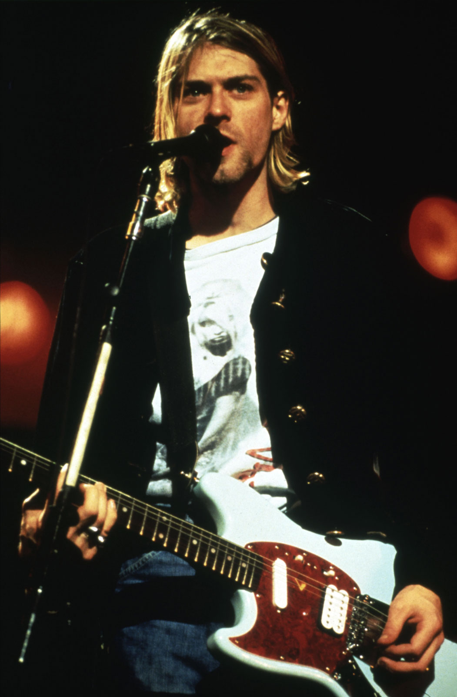
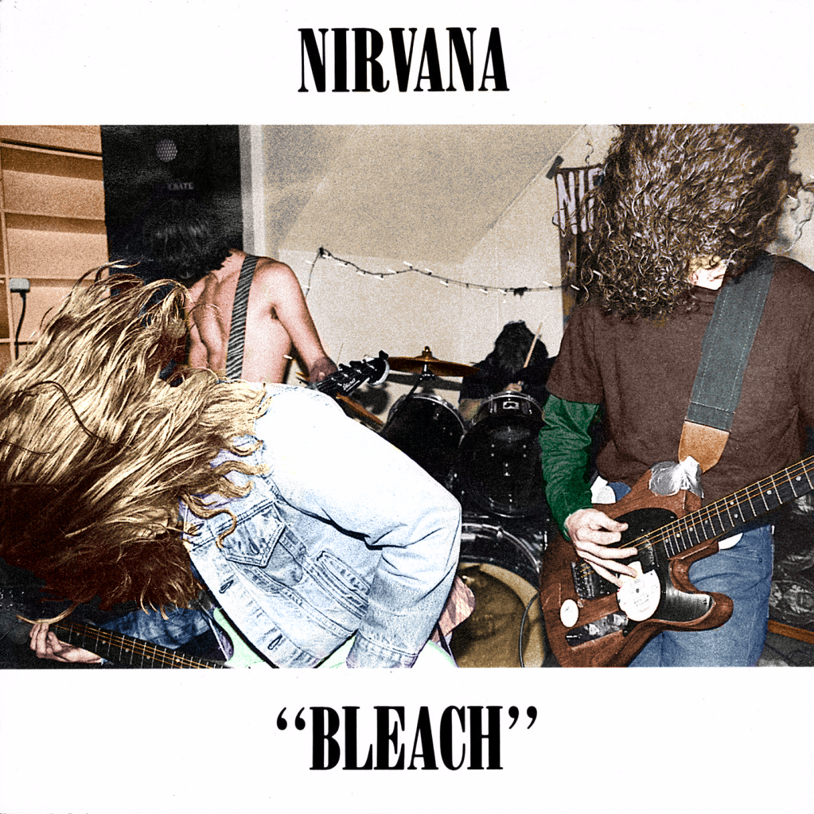
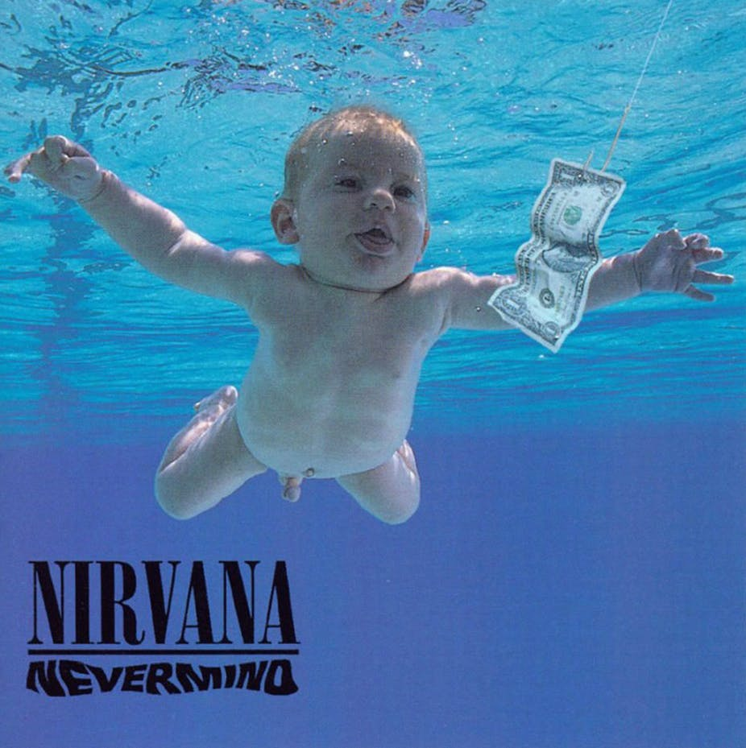
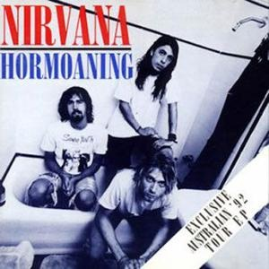

.jpg)

(1986)
(1987)
(1989)
(1991)
(1992)
(1993)
(1994)
|  | |
| ♩Name | Kurt Donald Cobain |
|---|---|
| ♩Born | February 20, 1967 (Aberdeen, Washington) |
| ♩Death | April 5, 1994 (committed suicide at Seattle, Washington) |
| ♩Occupation | Singer,songwriter,musician visual artist |
| ♩Genres |
Grunge alternative rock |
| ♩Band | Nirvana |
| ♩Associated acts | Nirvana Fecal Matter Earth Melvins the Jury |
| ♩Years active | 1987–1994 |
| ♩Spouse | Courtney Love |
| ♩Children | Frances Bean |
Kurt Donald Cobain (February 20, 1967 – c. April 5, 1994) was an American singer, songwriter, artist[1] and musician. He was the frontman of the rock band Nirvana, serving as the band's guitarist, lead vocalist, and primary songwriter. Through his angst-fueled songwriting and anti-establishment persona, Cobain's compositions widened the thematic conventions of mainstream rock music. He was often heralded as a spokesman of Generation X and is considered to be one of the most influential musicians in the history of alternative rock.
Cobain formed the band Nirvana with Krist Novoselic and Aaron Burckhard in 1987 and established it as part of the Seattle music scene which later became known as grunge . After signing with major label DGC Records, Nirvana found global success with "Smells Like Teen Spirit" from their critically acclaimed second album Nevermind (1991). Although Cobain was hailed as the voice of his generation following Nirvana's sudden success, he resented this, believing his message and artistic vision had been misinterpreted by the public. In addition to "Smells Like Teen Spirit", Cobain wrote many other notable songs for Nirvana, including "Come as You Are", "Lithium", "In Bloom", "Something in the Way", "Heart-Shaped Box", "All Apologies", "About a Girl", "Aneurysm" and "You Know You're Right".
During the last years of his life, Cobain struggled with heroin addiction and chronic health problems such as depression. He also struggled with the personal and professional pressures of fame, and he had a tumultuous relationship with his wife, fellow musician Courtney Love.[3] In March 1994 , Cobain overdosed on a combination of champagne and Rohypnol, and he subsequently entered an intervention and underwent a detox program.
On April 8, 1994, Cobain was found dead at his home in Seattle at the age of 27; police concluded he had died on April 5 from a self-inflicted shotgun wound to the head.
Cobain was posthumously inducted into the Rock and Roll Hall of Fame , along with Nirvana bandmates Krist Novoselic and Dave Grohl, in their first year of eligibility in 2014. Rolling Stone included Cobain in its lists of the 100 Greatest Songwriters of All Time, 100 Greatest Guitarists, and 100 Greatest Singers of All Time. He was ranked 7th by MTV in the "22 Greatest Voices in Music" . In 2006, he was placed 20th by Hit Parader on their list of the "100 Greatest Metal Singers of All Time" .
|
|
 |  |  | |
|
| Illiteracy Will Prevail (1986) |
LIVE ON AIR (1987) |
Bleach (1989) |
Nevermind (1991) |
Hormoaning (1992) |
In Utero (1993) |
Grunge Is Dead (1994) |
|---|